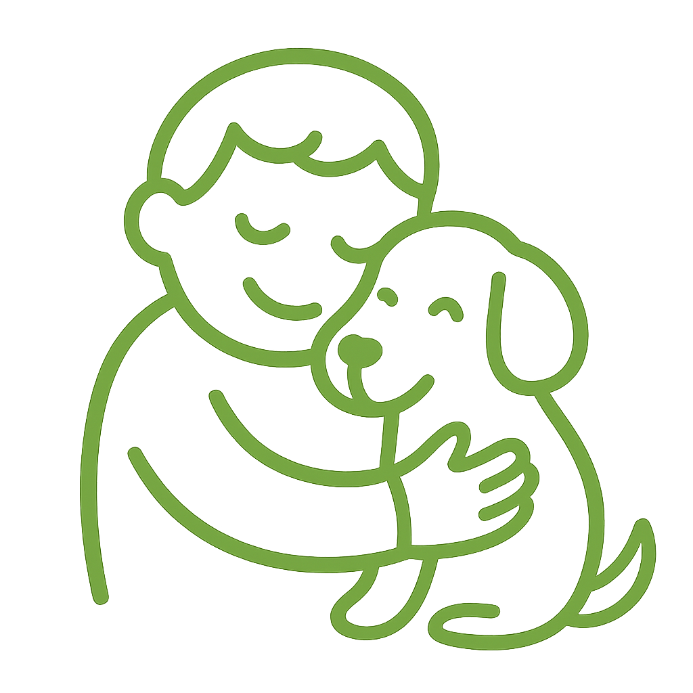
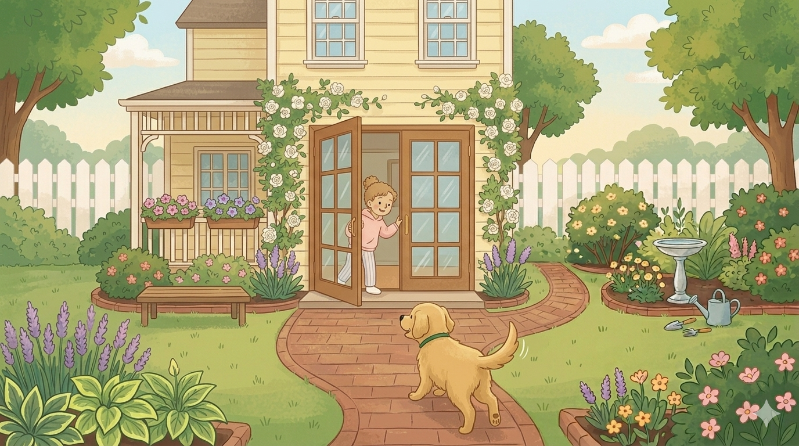
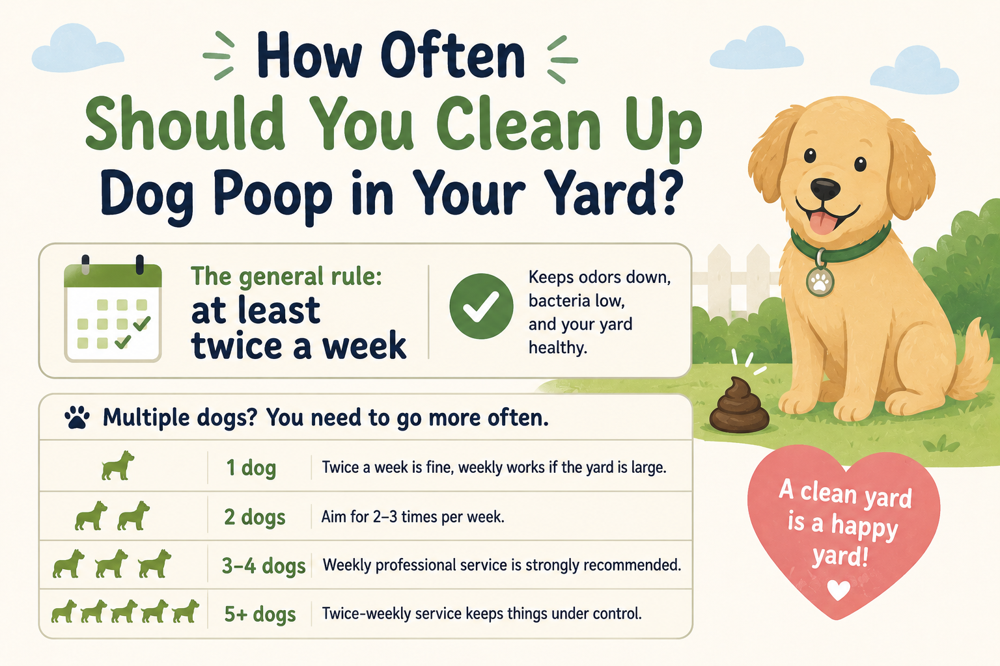
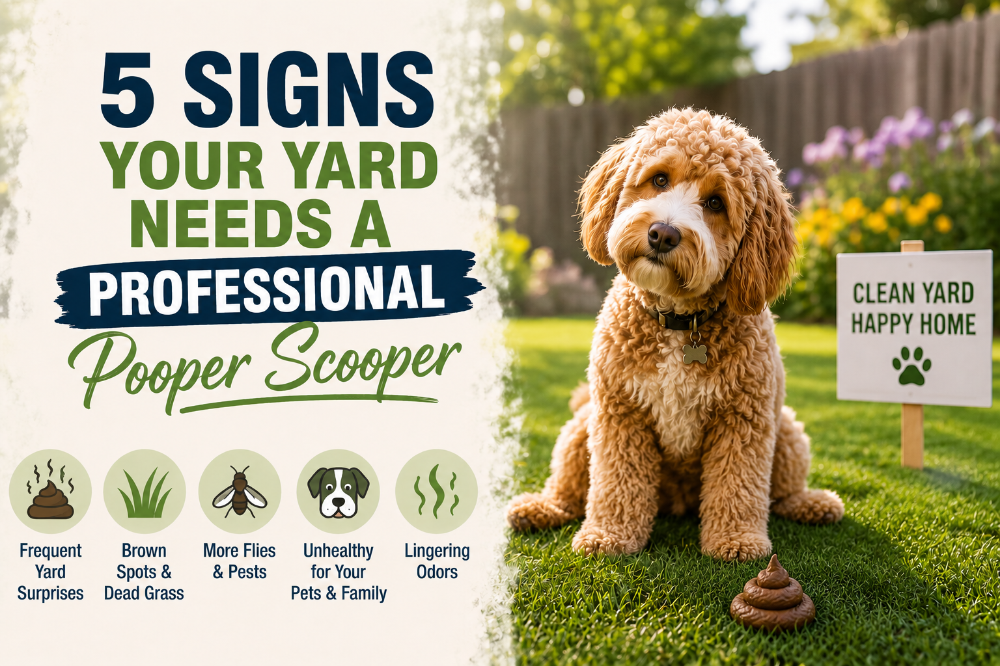
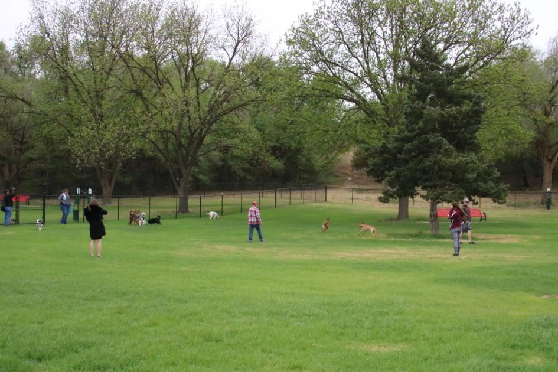

Why Dog Poop Is More Dangerous Than You Think
Dog waste isn't just unpleasant — it's classified as an environmental pollutant by the EPA. Learn the real health risks lurking in your Lubbock backyard.

Tips, facts & dog life from Lubbock's favorite pooper scooper
Welcome to the PoopDood Blog — dog care advice, yard health tips, and honest pet waste facts written for Lubbock pet owners. Every article is written by Corbin Key the owner, a Lubbock native who started PoopDood to help local families keep their backyards clean and their dogs healthy. Whether you're figuring out how often to scoop, what's actually in that pile your dog left, or which local parks are worth the trip with your pup — you'll find no-fluff, experience-backed answers here. New articles drop regularly, so bookmark this page and check back often. Hit home to book PoopDood to scoop your yard!

Healthy adult dogs can technically hold it for 8 hours — but that doesn't mean they should. Here's why a 4-hour schedule makes a real difference for your dog's health and behavior.
Dog waste isn't just unpleasant — it's classified as an environmental pollutant by the EPA. Learn the real health risks lurking in your Lubbock backyard.

Weekly? Daily? Every other day? The answer depends on how many dogs you have, your yard size, and the season.

Brown grass patches, guests avoiding the backyard, or a smell you can't shake — these are all signs it's time to bring in the pros.

We rounded up the top dog-friendly parks in Lubbock and put together a checklist of what every responsible dog owner should always carry.